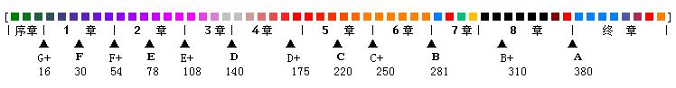
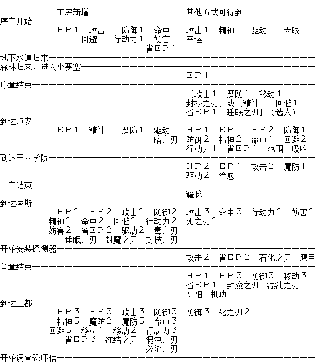
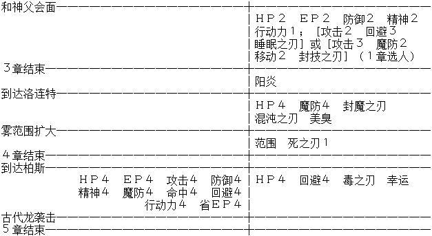
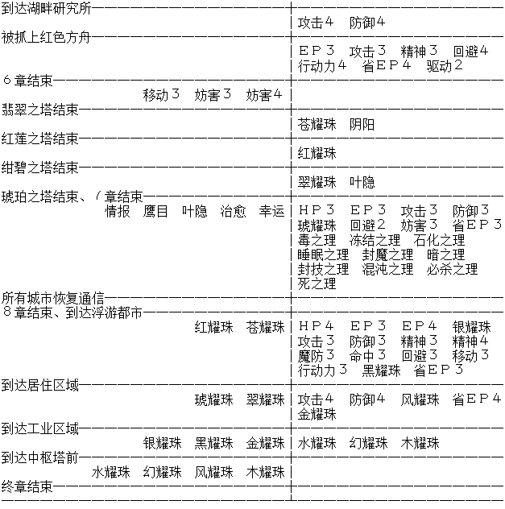

空之轨迹SC全回路入手方式
原作者T611AM，主要收集了SC全部回路的入手方式。不喜欢合成回路的同学也要看看，有时候长期拿不到的回路就合成一下吧= =（点击链接会跳转到对应位置）为了方便读者，还将同一作者的另一篇文章《 空之轨迹SC 导力器和魔法详细介绍 》中的最后一部分 SC开封结晶孔与EP值上限 中的主体部分收入，其中的理查德、凯诺娜为修改人物，相关数据是从游戏文件中提取出来的，不是用修改器的情况下是不能使用的。（顺带一提，这个凯诺娜是一个我方可控人物，与第三章章末BOSS的凯诺娜数据完全不同）

●ＨＰ ●ＥＰ ●攻击 ●防御 ●精神
●魔防 ●命中 ●回避 ●移动 ●行动力
●妨害 ●省EP ●驱动 ●范围 ●刃理
●功能 ●修改 来源说明 流程统计表 结晶孔强化与EP上限
SC里面回路入手的规律和FC差不多，补充点如下：
1.SC里的回路从3等变成了5等，意味着回路要更换较多次，较为浪费。而游戏前中期耀晶片比较缺乏，因此建议前期最好尽量少把耀晶片花费在合成XX1、XX2、XX3的回路上面（驱动2还是尽早多准备），而留到第五章合成XX4的回路。五至八章的战斗相对比较有难度，如果XX4回路较充裕，可以打得比较轻松。
此外虽然一开始就可以进行结晶孔的Lv2强化，但是序章至四章很少出现Lv2的回路（XX4及天眼等特殊回路），因此不需要强化太多人的孔。魔法型角色可以多强化一些以提升EP上限。等到第五章，再根据手头耀晶片的多少进行大规模强化。建议把小艾的孔尽早都强化，第六章有用。
后期合成耀珠以及结晶孔的Lv3强化需要消耗大量耀晶片（终章的耀珠每个要花费耀晶片1000左右），因此在七、八两章一定要有意识的积攒耀晶片。要点如下：
(1)前期最好多刷一些天使羊。不过第八章有更快的方法，可以不用这个。
(2)第四章结束后的矿山委托书支线任务可以选择得到某种耀晶片500个。建议选择空属性，因为金耀石价格最贵（从换钱的地方可以看出），而且一般最缺的一种就是空属性。
(3)各处的宝箱都捡全。有些宝箱会装有耀晶片。第七章的各个异空间，从箱子里可以捡到不少耀晶片。
(4)平时每场战斗要盯着红色的SEPITH UP奖励，如果奖励轮到我方，尽量用小艾的S技和旋风轮、雪拉的女王之怒、提妲的炮射冲击、风之领域魔法等打击数高的招式抢夺较多额外耀晶片。同时尽量避免被敌人抢到SEPITH UP奖励。
(5)好好利用SC的钓鱼系统（钓鱼资料参见空间中另一帖）。第八章善于钓鱼可以获得巨量耀晶片。前五章先弄到几条黑鲑或鲑鱼留着（等到第八章再准备也可以），第八章一开始就南下湖畔钓起湖之主霸王红鲑（必要时用S/L大法），获得特级钓师认定证，然后去王都的钓公师团便可以购买所有种类的鱼饵（不包括可作饵的鱼）。有些种类的鱼会吐很多的耀晶片，可参考钓鱼资料选择购买合适的鱼饵到特定钓点钓取。
(6)王都西街区有个一直挂着SALE牌子的店面（戴尔蒙商会），到了第八章可以进去用米拉购买耀晶片，可以在那里批量补充所需的耀晶片。价格：地水火风时耀晶片3000米拉100个；空耀晶片9000米拉100个；幻耀晶片6000米拉100个。
PS：个人觉得购买界面有些不友好：每购买一次鼠标都会自动回到第一项；没法随时看到自己已有的耀晶片数量；某种数量超过9999也不会提示，购买时最好随时返回Item里查看已有数量。
注意：购买鱼饵和购买耀晶片都需要在全部3个零力场发生器送完之前。如果都送完，那么来到王都就会自动进入剧情，你就没机会了。最好先留着一个城市的零力场不送，等大钓鱼大采购结束以后再送。
钓鱼时如果专门盯着某种鱼钓，可能会使某种耀晶片到达上限9999，这时可以把这种耀晶片先换一部分钱，去购买其他种类的耀晶片。注意各地区的换金率不一样，卢安、蔡斯、王都、洛连特和柏斯分别是20、22、24、26、28（20是指1耀晶片能换得20米拉（空是60，幻是40）。其余类推）。因此最好去柏斯换钱，损失最小。
请在第八章就把所有人的所有孔都开到Lv3，并备齐除了耀珠以外的所有回路，然后再继续攒耀晶片。终章船上的工房是没有新的回路的，到那时除了还要开小奥、神父、乔丝特几人的Lv3孔以外，就可以把所有石头都用来合成耀珠和留给下一周目了。
第八章走之前，可以去戴尔蒙商会把身上所有的米拉都购买耀晶片。不用心疼钱。因为终章船上的换金率是30，正好等于戴尔蒙商会的购买价格。如果到时候有剩余的耀晶片，可以原封不动的换回米拉。
需要留给终章的耀晶片数量参考：如果要给队里4人各备齐一套11个耀珠，需要每种耀珠合成3个（因为可以开宝箱/打怪得到一套），那么需要耀晶片总数量为：地3000水6000火3000风9600时6000空6750幻10650(>9999)。实际上并不用备齐完整的四套，各位可根据自己需要进行准备即可。
关于(5)(6)两条建议如下：
得到认定证后来到王都，购买数十个川虫和鲑鱼卵即可。
来到王都的码头（第三章BOSS战的地方）最里面的钓鱼点（在船头），用这两种饵只会钓到两种鱼：虹鳟鱼和鲑鱼。虹鳟鱼专吐七色耀晶片，可以七种耀晶片同样进度的攒，效果要好于其他吐耀晶片的鱼。鲑鱼则经常会吐鲑鱼卵，因此鲑鱼卵很难用完，可以钓很久。把鲑鱼都留着，不要在这里钓。
然后可以去卢安。去卢安前可再购买数十个海参。在梅威海道那个秘密地点（FC古海图那里），用鲑鱼只会钓上两种鱼：鲯鳅和帝剑鱼，鲯鳅会吐水耀晶片，帝剑鱼会吐更多水耀晶片，并且鱼本身可卖高价2500。而用海参在这里会钓到专吐空耀晶片的太阳鱼和吐时耀晶片的黑鲷等。在这里水耀晶片很容易超限，及时去换钱。
另外在洛连特艾利兹街道的桥边用鲑鱼卵或虾米只会钓到黑鲑，专吐时/幻耀晶片，也是个不错的选择。把黑鲑拿到王都码头则可以钓到很多药和首饰，算是附赠品。
不能做饵的鱼随时卖掉。吐出来的用不着的食材、药等也都可以卖掉。
其他地方钓点没什么太好的地方，总会混有很烂的鱼。
（注：以上的文字使用的鱼名是打过翻译补丁后的翻译，如果你没打补丁，很多鱼的名字会不一样）
终章到了浮游都市以后，没有钓鱼的地方了，也不能买耀晶片了，只能打怪和刷羊掉了。不过终章的怪物带的石头还是比较多的。
2.SC的工房，按游戏进度依次有：
序章·卢·洛克尔训练场宿舍·卢·洛克尔工房
第1章·卢安市·北街区·格拉纳特工房
第2章·蔡斯市·中央工房1F维修窗口
第3章·王都格兰赛尔·南街区·文加尔德工房
第4章·洛连特市·梅尔达斯工房
第5章·柏斯市·南街区·鲁希尔工房
第7章·埃尔赛尤号工房
第8章·洛连特、柏斯、卢安、蔡斯、格兰赛尔五大城市的工房（地点同1~5章）
终章·埃尔赛尤号工房
终章·公园区域空中缆车站终端
终章·居住区域空中缆车站终端
终章·工业区域空中缆车站终端
终章·中枢塔前空中缆车站终端
SC不再完全遵循"前面工房里有的回路，到后面的工房都能找到"这个规律。如终章浮游都市的缆车站，只能合成几种耀珠，其他的都没。又如第2章蔡斯的工房里面没有"魔防"系列回路，而前后的工房都有，一直百思不得其解，后来想到一个理由：那一章席德中校邀请你参加特别训练，为增强他的魔法伤害力，事先通知工房要他们不卖给你魔防回路……
3.有些回路是继承FC通关存档才能得到，比如开始奖励的"幸运"需要FC拿全368BP，又比如"阴阳"等需要前作的支线任务完美完成才有的。如果你是直接开始新游戏，那这些回路当然都是得不到的（以后还可以在宝箱里面拿到，但是就要晚些了）。继承存档的问题请看空间中的继承存档专帖。
4.第8章将可以在工房里面合成5种1级特殊回路：情报、鹰目、叶隐、治愈、幸运。且要求耀晶片也不是很多。这些回路不再是稀罕物了。但是阳炎、美臭和所有2级特殊回路还是没法合成。
获得方式代号说明：
[合]
工房合成。括号内数字表示需要花费耀晶片数量。
[自]
队员刚加入队伍时的初始装备。
[敌]
某些魔兽身上带有的回路，死后有一定几率掉落。
[奖]
游击士等级提升时的奖励。
[箱]
宝箱。
[支]
支线任务的奖励。
[继]
继承存档后才能获得。
[他]
其他方式。
●ＨＰ１ [合]序章·训练场工房 及以后所有工房（终章浮游都市的4个终端除外，下同）（消耗耀晶片：水20）；
[自]１章·凯文神父初始装备；
[自]２章结束·金初始装备
●ＨＰ２ [自]１章·科洛丝初始装备；
[合]２章·蔡斯工房 及以后所有工房（水100）；
[自]３章后期·凯文神父再次归队时装备
●ＨＰ３ [敌]２章结束·卡鲁迪亚钟乳洞的魔兽「帝王企鹅」身上（35%）；
[合]３章·格兰赛尔工房 及以后所有工房（水200）；
[自]８章·卢安地区·「王立学院受袭事件」任务中，亚妮拉丝装备；
[自]８章·卢安地区·「王立学院受袭事件」任务中，克鲁茨装备
●ＨＰ４ [敌]４章·艾利兹街道的通缉魔兽「呼啸母兽」身上（10%）；
[合]５章·柏斯工房 及以后所有工房（水300）；
[敌]５章·安塞尔新街、东柏斯街道的魔兽「呼啸母兽」身上（10%）；
[箱]５章·琥珀之塔3层西南宝箱；
[自]终章·科洛丝归队时装备；
[自]终章·凯文神父归队时装备
●水耀珠 [箱]终章·地下通道3（工业区域-中枢塔）宝箱（后半段有7个一排宝箱的死胡同，最左边的宝箱）；
／ＨＰ５ [合]终章·中枢塔前缆车站终端（水1000）
●ＥＰ１ [箱]序章·小要塞1楼宝箱；
[合]１章·卢安工房 及以后所有工房（时10空10幻30）；
[自]１章·凯文神父初始装备；
[自]１章·科洛丝初始装备
●ＥＰ２ [敌]１章·玛诺利亚间道的魔兽「卷尾蟾蜍」身上（5%）；
[自]１章·奥利维尔初始装备；
[合]２章·蔡斯工房 及以后所有工房（时50空50幻100）；
[自]３章·凯文神父再次归队时装备；
[自]３章后期·雪拉扎德初始装备（需１章开始选的是阿加特）
●ＥＰ３ [合]３章·格兰赛尔工房 及以后所有工房（时100空100幻200）；
[自]４章开始·约修亚初始装备；
[自]６章·甲板战后，约修亚归队时装备；
[自]８章·卢安地区·「王立学院受袭事件」任务中，克鲁茨装备；
[自]终章·科洛丝归队时装备；
[自]终章·凯文神父归队时装备
●ＥＰ４ [合]５章·柏斯工房 及以后所有工房（时200空200幻300）；
[自]终章·奥利维尔归队时装备
●银耀珠 [箱]终章·地下通道1（公园区域-居住区域）宝箱（路第一次拐弯后，旁边一小房间里）；
／ＥＰ５ [合]终章·工业区域缆车站终端（时400空400幻1000）
●攻击１ [合]序章·训练场工房 及以后所有工房（火50）；
[箱]序章·地下水道宝箱；
[自]１章·阿加特初始装备（需选阿加特）
●攻击２ [箱]１章·旧校舍地下遗迹1层宝箱；
[合]２章·蔡斯工房 及以后所有工房（火100）；
[自]２章·提妲初始装备；
[自]３章后期·雪拉扎德初始装备（需１章开始选的是阿加特）
●攻击３ [箱]２章·红莲之塔5层宝箱，有魔兽；
[合]３章·格兰赛尔工房 及以后所有工房（火200）；
[自]３章后期·阿加特初始装备（需１章开始选的是雪拉）；
[箱]４章开始·旧空贼要塞入口左边尽头宝箱；
[自]６章·甲板战后，约修亚归队时装备；
[自]８章·卢安地区·「王立学院受袭事件」任务中，克鲁茨装备；
[自]终章·奥利维尔归队时装备
●攻击４ [合]５章·柏斯工房 及以后所有工房（火300）；
[箱]６章·湖上研究所3层宝箱，有魔兽；
[自]终章·乔丝特初始装备
●红耀珠 [箱]７章·绀碧之塔·异空间5（去塔顶前一层）宝箱（刚到此层的传送点后面）；
／攻击５ [合]终章·公园区域缆车站终端（火1000）
●防御１ [合]序章·训练场工房 及以后所有工房（地20）；
[自]１章·奥利维尔初始装备
●防御２ [自]１章·凯文神父初始装备；
[合]２章·蔡斯工房 及以后所有工房（地100）；
[自]３章后期·凯文神父再次归队时装备；
[自]３章后期·阿加特初始装备（需１章开始选的是雪拉）
●防御３ [自]２章结束·金初始装备；
[合]３章·格兰赛尔工房 及以后所有工房（地200）；
[箱]３章·艾尔贝周游道西南段南部宝箱；
[自]８章·卢安地区·「王立学院受袭事件」任务中，亚妮拉丝装备；
[自]８章·卢安地区·「王立学院受袭事件」任务中，克鲁茨装备；
[自]终章·奥利维尔归队时装备；
[自]终章·凯文神父归队时装备
●防御４ [合]５章·柏斯工房 及以后所有工房（地300）；
[箱]６章·湖上研究所1层宝箱（在电梯间前一个小房间）；
[自]终章·乔丝特初始装备
●琥耀珠 [敌]８章·洛连特地区·玛鲁加矿山「营救矿工们」任务BOSS「巨甲水螅」身上（100%）；
／防御５ [合]终章·居住区域缆车站终端（地1000）
●精神１ [箱]序章·地下水道宝箱；
[自]１章·雪拉扎德初始装备（需选雪拉）；
[合]１章·卢安工房 及以后所有工房（水30）
●精神２ [自]１章·凯文神父初始装备；
[合]２章·蔡斯工房 及以后所有工房（水100）；
[自]３章后期·凯文神父再次归队时装备；
[自]３章后期·雪拉扎德初始装备（需１章开始选的是阿加特）
●精神３ [合]３章·格兰赛尔工房 及以后所有工房（水200）；
[自]４章开始·约修亚初始装备；
[自]６章·甲板战后，约修亚归队时装备；
[自]终章·科洛丝归队时装备
●精神４ [合]５章·柏斯工房 及以后所有工房（水300）；
[自]终章·凯文神父归队时装备
●苍耀珠 [箱]７章·红莲之塔·异空间5（去塔顶前一层）宝箱；
／精神５ [合]终章·公园区域缆车站终端（水1000）
●魔防１ [自]１章·阿加特初始装备（需选阿加特）；
[合]１章·卢安工房-（２章工房没有） 及以后所有工房（风20）；
[箱]１章·旧校舍地下遗迹1层宝箱（3个并排箱子左边那个）
●魔防２ [合]３章·格兰赛尔工房 及以后所有工房（风100）；
[自]３章后期·阿加特初始装备（需１章开始选的是雪拉）
●魔防３ [合]３章·格兰赛尔工房 及以后所有工房（风200）；
[自]终章·科洛丝归队时装备
●魔防４ [箱]４章·翡翠之塔5层宝箱；
[合]５章·柏斯工房 及以后所有工房（风300）
●翠耀珠 [箱]７章·琥珀之塔·异空间5宝箱（第一次到5层时，中央路上的宝箱）；
／魔防５ [合]终章·居住区域缆车站终端（风1000）
●命中１ [合]序章·训练场工房 及以后所有工房（幻20）；
[自]１章·奥利维尔初始装备；
●命中２ [合]２章·蔡斯工房 及以后所有工房（幻100）
●命中３ [支]２章·「新型导力枪测试」任务奖励；
[合]３章·格兰赛尔工房 及以后所有工房（幻200）；
[自]终章·奥利维尔归队时装备
●命中４ [合]５章·柏斯工房 及以后所有工房（幻300）
●幻耀珠 [箱]终章·工业区域1，主路右侧第一个巨大环状道路，圆心位置的宝箱；
／命中５ [合]终章·中枢塔前缆车站终端（幻1000）
●回避１ [合]序章·训练场工房 及以后所有工房（风20）；
[自]１章·雪拉扎德初始装备（需选雪拉）；
●回避２ [敌]１章·梅威海道的魔兽「骑士甲壳」身上（10%）；
[合]２章·蔡斯工房 及以后所有工房（风100）；
[自]８章·卢安地区·「王立学院受袭事件」任务中，亚妮拉丝装备
●回避３ [合]３章·格兰赛尔工房 及以后所有工房（风200）；
[自]３章后期·雪拉扎德初始装备（需１章开始选的是阿加特）；
[自]终章·奥利维尔归队时装备
●回避４ [自]４章开始·约修亚初始装备；
[合]５章·柏斯工房 及以后所有工房（风300幻100）；
[箱]５章·迷雾峡谷东部宝箱，有魔兽（空贼要塞入口外右边）；
[自]６章·甲板战后，约修亚归队时装备
●风耀珠 [箱]终章·地下通道2（居住区域-工业区域）后半段，从下往上走的漏斗形房间某条支路尽头宝箱；
／回避５ [合]终章·中枢塔前缆车站终端（风1000幻100）
●移动１ [自]１章·阿加特初始装备（需选阿加特）；
[合]３章·格兰赛尔工房 及以后所有工房（空100）
●移动２ [合]３章·格兰赛尔工房 及以后所有工房（空200）；
[自]３章后期·阿加特初始装备（需１章开始选的是雪拉）
●移动３ [自]２章结束·金初始装备；
[合]７章·埃尔赛尤号工房 及以后所有工房（空400）；
[自]终章·奥利维尔归队时装备
●行动力１ [合]序章·训练场工房 及以后所有工房（时100）；
[自]１章·凯文神父初始装备
[自]３章后期·凯文神父再次归队时装备
●行动力２ [合]２章·蔡斯工房 及以后所有工房（时200）；
[箱]２章·红莲之塔4层宝箱
●行动力３ [合]３章·格兰赛尔工房 及以后所有工房（时400）；
[自]终章·凯文神父归队时装备
●行动力４ [自]４章开始·约修亚初始装备；
[合]５章·柏斯工房 及以后所有工房（时600）；
[自]６章·甲板战后，约修亚归队时装备
●黑耀珠 [箱]终章·地下通道1（公园区域-居住区域），绕到之前的路上方时，旁边岔路的宝箱；
／行动力５ [合]终章·工业区域缆车站终端（时1000）
●妨害１ [合]序章·训练场工房 及以后所有工房（风100空50幻50）
●妨害２ [合]２章·蔡斯工房 及以后所有工房（风200空100幻100）；
[箱]２章·佐达特军用道南段宝箱
●妨害３ [合]７章·埃尔赛尤号工房 及以后所有工房（风400空300幻300）；
[自]８章·卢安地区·「王立学院受袭事件」任务中，亚妮拉丝装备
●妨害４ [合]７章·埃尔赛尤号工房 及以后所有工房（风800空600幻600）
●木耀珠 [箱]终章·地下通道3（工业区域-中枢塔），第二个有3个宝箱的房间中，中间宝箱；
／妨害５ [合]终章·中枢塔前缆车站终端（风1200空850幻850）
●省ＥＰ１ [合]序章·训练场工房 及以后所有工房（时10空20幻10）；
[自]１章·雪拉扎德初始装备（需选雪拉）；
[箱]１章·绀碧之塔前宝箱；
[自]２章结束·金初始装备
●省ＥＰ２ [合]２章·蔡斯工房 及以后所有工房（时100空200幻100）；
[自]２章·提妲初始装备
●省ＥＰ３ [合]３章·格兰赛尔工房 及以后所有工房（时300空400幻300）；
[自]８章·卢安地区·「王立学院受袭事件」任务中，亚妮拉丝装备；
[自]８章·卢安地区·「王立学院受袭事件」任务中，克鲁茨装备；
[自]终章·科洛丝归队时装备
●省ＥＰ４ [自]４章开始·约修亚初始装备；
[合]５章·柏斯工房 及以后所有工房（时400空600幻400）；
[自]６章·甲板战后，约修亚归队时装备；
[自]终章·乔丝特初始装备
●金耀珠 [箱]终章·居住区域2，得到「原福音」的房间，柜台后最里面的宝箱；
／省ＥＰ５ [合]终章·工业区域缆车站终端（时600空1000幻600）
●驱动１ [箱]序章·地下水道宝箱，有魔兽；
[合]１章·卢安工房 及以后所有工房（时20）
●驱动２ [箱]１章·旧校舍地下遗迹2层入口处宝箱，有魔兽；
[合]２章·蔡斯工房 及以后所有工房（时200）；
[自]４章开始·约修亚初始装备；
[自]６章·甲板战后，约修亚归队时装备
●范围 [自]１章·奥利维尔初始装备；
[箱]４章末期·神秘森林幻阵宝箱
（走法：进入幻阵后，往东-东-北-北-北走可到达宝箱，再往东-北-东可走出幻阵）
●毒之刃 [合]２章·蔡斯工房 及以后所有工房（地100）；
[箱]５章·琥珀之塔1层宝箱
●冻结之刃 [合]３章·格兰赛尔工房 及以后所有工房（水150）
●石化之刃 [奖]最早２章·正游击士等级升为Ｅ级时奖励（78BP）
●睡眠之刃 [自]１章·雪拉扎德初始装备（需选雪拉）；
[合]２章·蔡斯工房 及以后所有工房（风50）；
[自]３章后期·雪拉扎德初始装备（需１章开始选的是阿加特）
●封魔之刃 [合]２章·蔡斯工房 及以后所有工房（地50）；
[自]２章结束·金初始装备；
[箱]４章·艾利兹街道中段宝箱
●暗之刃 [合]１章·卢安工房 及以后所有工房（时50）
●封技之刃 [自]１章·阿加特初始装备（需选阿加特）；
[合]２章·蔡斯工房 及以后所有工房（火50）；
[自]３章后期·阿加特初始装备（需１章开始选的是雪拉）
●混沌之刃 [敌]２章结束·「投宿客人的搜索」任务BOSS「妖化企鹅」身上（100%）；
[合]３章·格兰赛尔工房 及以后所有工房（幻200）；
[箱]４章·洛连特地下水路尽头宝箱，有魔兽（就是当年研修时放两人徽章的那宝箱）
●必杀之刃 [合]３章·格兰赛尔工房 及以后所有工房（空120）
●死之刃１ [奖]最早４章后期·正游击士等级升为Ｄ＋级时奖励（175BP）
●死之刃２ [箱]２章·卡鲁迪亚隧道西段宝箱；
[箱]３章·艾尔贝周游道西南段北部宝箱
●毒之理 [敌]８章·蔡斯地区·托兰特平原道的通缉魔兽「深渊蠕虫」身上（100%）
●冻结之理 [敌]８章·卢安地区·绀碧之塔的通缉魔兽「雷电漂浮鱼」身上（100%）
●石化之理 [敌]８章·洛连特地区·艾利兹街道的通缉魔兽「亡命守护着」身上（100%）
●睡眠之理 [敌]８章·卢安地区·梅威海道的通缉魔兽「跳梁小丑」身上（100%）
●封魔之理 [敌]８章·柏斯地区·古罗尼山道的通缉魔兽「红色尖牙」身上（100%）
●暗之理 [敌]８章·蔡斯地区·利塔街道的通缉魔兽「剑齿虎」身上（100%）
●封技之理 [敌]８章·格兰赛尔地区·艾尔贝周游道的通缉魔兽「大仙人掌」身上（100%）
●混沌之理 [敌]８章·洛连特地区·米尔西街道的通缉魔兽「恶魔长矛」身上（100%）
●必杀之理 [敌]８章·柏斯地区·安塞尔新街的通缉魔兽「毁灭者Ｓ型」身上（100%）
●死之理 [敌]８章·格兰赛尔地区·王都地下水路·东区域的通缉魔兽「恶魔流体」身上（100%）
●情报 [自]４章开始·约修亚初始装备；
[合]８章·五大城市工房 及以后所有工房（幻50）
●美臭 [箱]４章·米尔西街道西段南部宝箱，有魔兽
●鹰目 [自]２章·提妲初始装备；
[合]８章·五大城市工房 及以后所有工房（空50幻50）
●阳炎 [奖]最早３章结束·正游击士等级升为Ｄ级时奖励（140BP）
●叶隐 [箱]７章·琥珀之塔·异空间3宝箱
（到5层后，传到4层的网格区域，进入最下方的传送点，传到3层遇见的第一个宝箱）；
[合]８章·五大城市工房 及以后所有工房（火80幻80）
●治愈 [自]１章·科洛丝初始装备；
[合]８章·五大城市工房 及以后所有工房（水150时150）
●耀脉 [奖]最早１章结束·正游击士等级升为Ｆ＋级时奖励（54BP）
●天眼 [敌]序章·地下水道最后BOSS克鲁茨身上（100%）
●阴阳 [继]２章结束·「投宿客人的搜索」任务奖励
（需在FC·２章中救过吉米并完成寻宝图任务，再继承此FC通关存档）；
[箱]７章·红莲之塔·异空间5（去塔顶前一层）宝箱；
●吸收 [奖]最早１章·正游击士等级升为Ｆ级时奖励（30BP）
●机功 [奖]最早２章结束·正游击士等级升为Ｅ＋级时奖励（108BP）
●幸运 [继]序章开始·继承FC全BP（368）通关存档，在序章开始奖励；
[箱]５章·迷雾峡谷西部宝箱（从通缉魔兽那里往南继续走，要钻两次洞）；
[合]８章·五大城市工房 及以后所有工房（时600空200）
●100%死之刃 修改，代码A8 02
●100%必杀之刃 修改，代码A9 02
●100%毒之刃 修改，代码AA 02
●100%冻结之刃 修改，代码AB 02
●100%石化之刃 修改，代码AC 02
●100%睡眠之刃 修改，代码AD 02
●100%封魔之刃 修改，代码AE 02
●100%暗之刃 修改，代码AF 02
●100%封技之刃 修改，代码B0 02
●100%混沌之刃 修改，代码B1 02
●100%气绝之刃 修改，代码B2 02
●物理吸收 修改，代码8E 02
●魔法吸收 修改，代码8F 02
●物理反射 修改，代码8A 02
●魔法反射 修改，代码8B 02
按故事流程来统计：

再次提醒：人物升级不会提升EP上限。要提升EP上限，必须在工房强化结晶孔。
SC中强化孔消耗耀晶片和提升EP上限的规律和FC有很大不同。
（下面灰色字部分实际游戏中不会出现，而是为研究开封/强化规律进行的修改测试）
SC中各角色，当所有结晶孔全部未开封时，EP上限将为0。
开封最下方的结晶孔（比FC新增的那一个）需要消耗地属性的耀晶片，开封以后EP上限将提升。开封其他六个结晶孔，不需要消耗耀晶片，但也不会提升EP上限（实际上各角色出场时，所有孔已经至少为Lv1）。
SC中各角色的初始EP值不同（所有孔均没有进行过强化时，其EP值为初始EP值）。
强化结晶孔需要消耗全部七种耀晶片。消耗地水火风最多，幻次之，空再次之，时最少。
强化属性限定孔时，需要额外消耗这种属性的耀晶片（这一点是FC没有的）。
结晶孔可以按任意顺序强化，不像FC的开封，只能从中央孔开始逐个向外开封。
另外发现很特别的一点：对地属性限定孔（金、乔丝特的），强化以后，提升的EP值会比其他孔要多一半。
Lv2强化：
距中央孔的距离 ０ １ ２ ３ ４ ５ ６（０为中央孔）
○─○─○─○─○─○─○
所需耀晶片数量：
地、水、火、风 20 30 45 65 90 120 150
时 3 4 5 6 7 8 10
空 8 9 11 13 16 20 25
幻 15 18 21 26 33 40 50
属性限定孔[注1] 30 45 67 98 135(180)225
81[注2]
增加的EP值 10 15 22 32 45 60 75
地孔增加的EP值 15 22 33
Lv3强化：
距中央孔的距离 ０ １ ２ ３ ４ ５ ６（０为中央孔）
○─○─○─○─○─○─○
所需耀晶片数量：
地、水、火、风 60 70 85 105 130 160 200
时 6 7 8 10 13 16 20
空 15 17 21 26 32 40 50
25[注3]
幻 30 35 42 52 65 80 100
属性限定孔[注1] 90 105 127 158 195(240)300
96[注4]
增加的EP值 30 35 42 52 65 80 100
地孔增加的EP值 45 52 63
注1：不论为何属性限定孔，所需该属性的耀晶片数量都将变为该值。例如科洛丝的中央水孔进行Lv2强化，需要30水耀晶片，而不是20；约修亚的中央时孔进行Lv2强化，需要30时耀晶片，而不是3。
注2：尤莉亚的第二个风孔Lv2强化需要81风，而非通常的67。
注3：尤莉亚的中央风孔Lv3强化需要25空，而非通常的15。
注4：约修亚的中央时孔Lv3强化需要96时，而非通常的90。
角色(后三人要靠修改) 艾 约 雪 奥 科 阿 提 金 凯 乔 亚 克 理查德 凯诺娜 尤莉亚
─────────────────────────────────────────────
（开封）：
开最下孔需地耀晶片 180 240 260 280 280 150 160 180 240 160 170 160 200 200 260
开封所有孔后EP上限 90 120 130 140 140 75 80 90 120 80 85 80 100 100 130
─────────────────────────────────────────────
＝初始EP上限 90 120 130 140 140 75 80 90 120 80 85 80 100 100 130
─────────────────────────────────────────────
Lv1-->Lv2强化：
全部强化需地耀晶片 300 325 400 520 520 245 265 255 400 332 230 325 0 0 400
需水耀晶片 300 325 400 520 650 245 265 230 400 300 230 325 0 0 400
需火耀晶片 300 325 400 520 520 270 265 230 400 300 230 325 0 0 400
需风耀晶片 300 325 432 520 520 245 265 230 400 300 255 325 0 0 446
需时耀晶片 33 153 37 43 43 30 31 29 64 33 29 34 0 0 0
需空耀晶片 74 77 86 102 102 68 148 66 86 74 66 77 0 0 0
需幻耀晶片 145 152 171 218 203 132 137 129 171 145 129 167 0 0 0
所有孔强化后EP上限 238 281 329 399 399 196 211 216 319 244 199 241 100 100 281
─────────────────────────────────────────────
Lv2-->Lv3强化：
全部强化需地耀晶片 580 605 680 810 810 525 545 575 680 652 510 605 0 0 680
需水耀晶片 580 605 680 810 1005 525 545 510 680 580 510 605 0 0 680
需火耀晶片 580 605 680 810 810 590 545 510 680 580 510 605 0 0 680
需风耀晶片 580 605 752 810 810 525 545 510 680 580 575 605 0 0 752
需时耀晶片 56 297 67 80 80 51 53 50 151 56 50 59 0 0 67
需空耀晶片 143 149 168 201 201 129 315 125 168 143 125 149 0 0 178
需幻耀晶片 288 301 339 464 404 261 271 254 339 288 254 361 0 0 339
所有孔强化后EP上限 526 582 668 803 803 457 482 502 658 568 453 542 100 100 668
注：
1.克鲁茨的“新孔”（开封要消耗地耀晶片的孔）为右上孔，而非最下孔。
2.理查德和凯诺娜进行Lv2、Lv3强化不需要消耗任何耀晶片，但也不增加EP上限。
3.尤莉亚进行Lv2强化不需要消耗时空幻耀晶片。